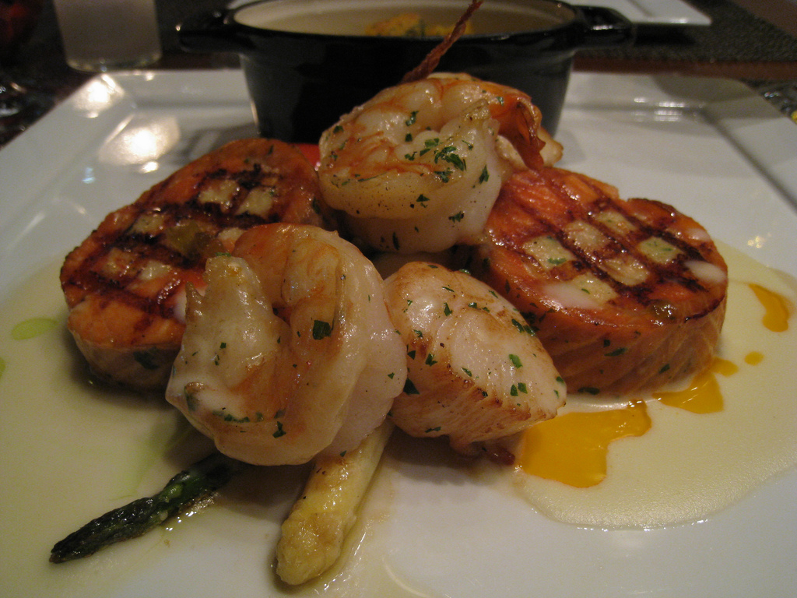

Recipes
Ingredients
- 3-4 Heads of Cabbage (Shredded)
- 1/2lb Bacon, Rendered or use oil
- 1 13oz link of Smoked Sausage cut into pieces
- Salt, Coarse Black Pepper, and Sugar to taste
Fried Cabbage

Instructions
- After washing and shredding your cabbage, put in a large pot.
- Pour 3 Cups of sugar, add salt and pepper and the oil over the cabbage.
- Cover and cook on high heat.
- When the cabbage leaves are tender add the smoked sausage.
- Tips: You can use Pork, Beef or Turkey Sausage and Bacon!
Ingredients
- 1 teaspoon olive oil
- 1 large red onion, thinly sliced and separated into rings
- 1 teaspoon Cajun seasoning
- 1/2 teaspoon ground black pepper
- 1 teaspoon butter
- 1 garlic clove
- 3/4 pound fresh scallops
- 1 to 2 teaspoons hot sauce
Scallops
Instructions
- Heat oil in a cast-iron skillet over high heat.
- Add onion, Cajun seasoning, and pepper; sauté 3 minutes.
- Add butter and garlic; sauté 30 seconds.
- Add scallops; cook 1 minute or until browned.
- Sprinkle with hot sauce; turn. Cook 3 minutes or until done.